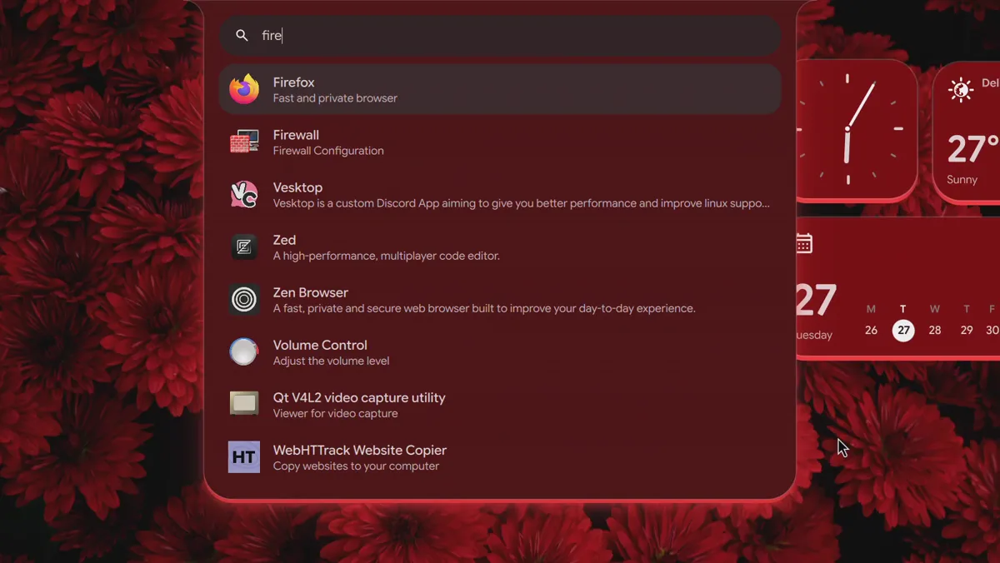
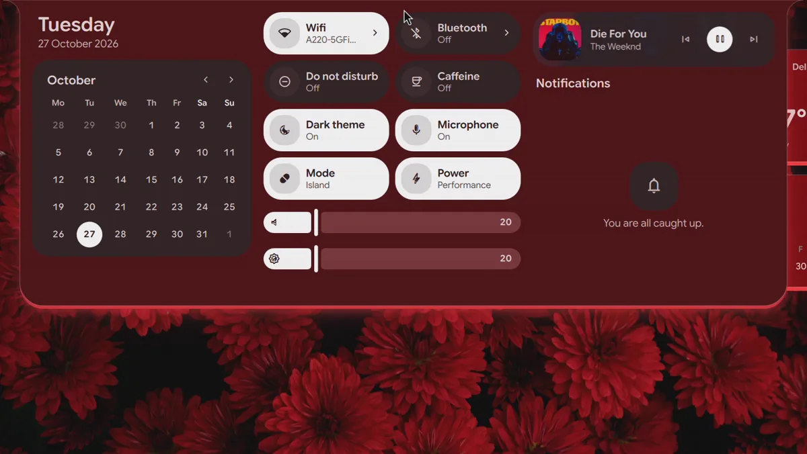
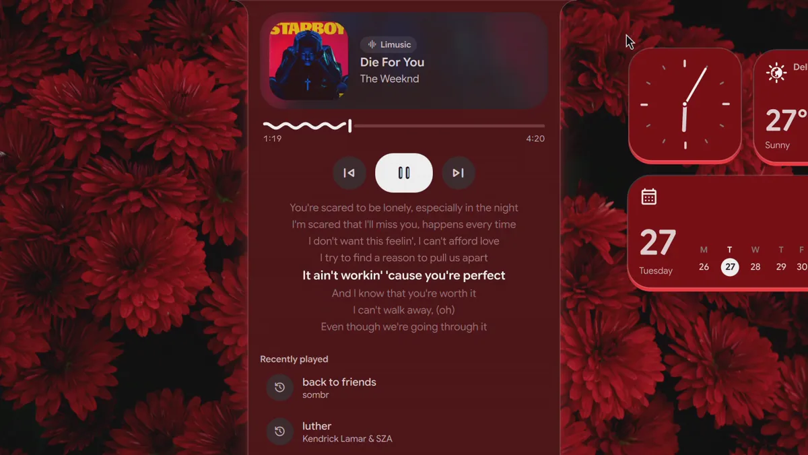
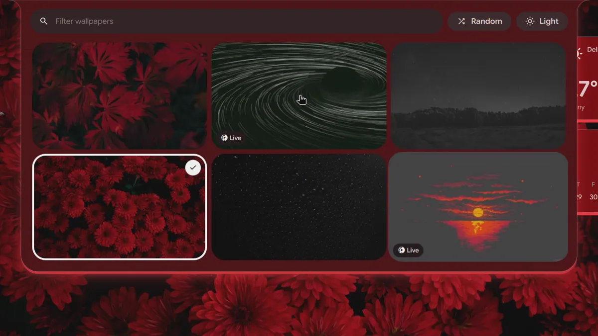

One island. Your whole desktop.
Sweeteh is a desktop shell for Hyprland, built with Quickshell. Everything lives in one island, lit from below in the color of your wallpaper.
Launcher
Type, and it is there
Apps, files, sums and unit conversions answer as you type. One first character turns the search into a command palette, an emoji picker or a window switcher.
>for every shell action, timers, dates and translations@windows,"clipboard,/recent files,$ssh hosts- Your own commands from the config

The island
One surface for everything
Quick settings, the calendar, notifications you can reply to, volume and brightness. It grows out of the island and glides back, never bouncing.
- Wi-Fi, VPN and Bluetooth pages
- A volume slider for each app
- Moments for charging, downloads and copies

Media
Music with its words
The player shows synced lyrics from LRCLIB and what you played lately. The island breathes with the bass, and a hover gives you the line being sung.
- Swipe the island to skip
- Pauses when your headphones go away
- Name any song with Super Shift N

Wallpapers
Pick one, everything follows
Images, GIFs and videos, with a wallhaven search in the picker. The shell, window borders, kitty, GTK apps, Vesktop and Zed recolor to match.
- Circle, wipe, fade and zoom transitions
- Nine schemes from the wallpaper
- Six fixed themes when you would rather not

And the rest of a desktop
Two layouts share all of it. Islands splits the bar into pills around the island, Island shows the island alone.
Lock and idle
A lockscreen with media controls and fingerprint unlock, idle lock, a slow dim and then sleep.
Capture
Screenshots and recordings of a region, window or screen, text copied off the screen and a Google Lens search.
Desktop widgets
Clock, weather, calendar, media, system load, lyrics and a live spectrum, placed where you like.
Overview
Every workspace with live window previews. Drag windows between them.
Settings
Every option in the island, searchable, with a keybind editor. The same options in one JSON file.
Every monitor
The bar, wallpaper, widgets and lockscreen on each screen. The island opens where you are looking.
Install
On Arch and Arch based distros. It asks before installing packages and backs up every config it replaces.
curl -fsSL https://raw.githubusercontent.com/Aarav2709/Sweeteh/main/install.sh | bashOther distros, options and uninstalling are in Getting started.
Read the docs
Short pages, one per subject.